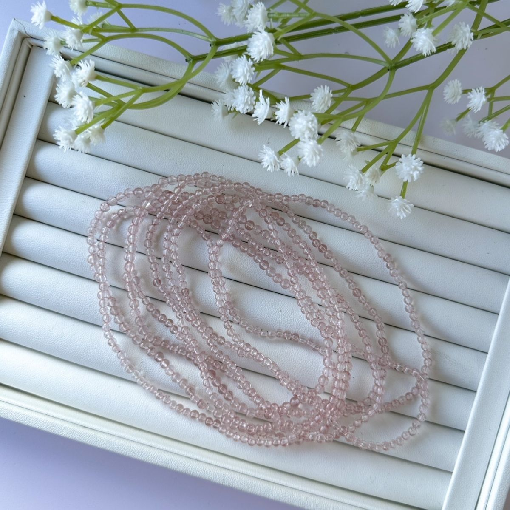
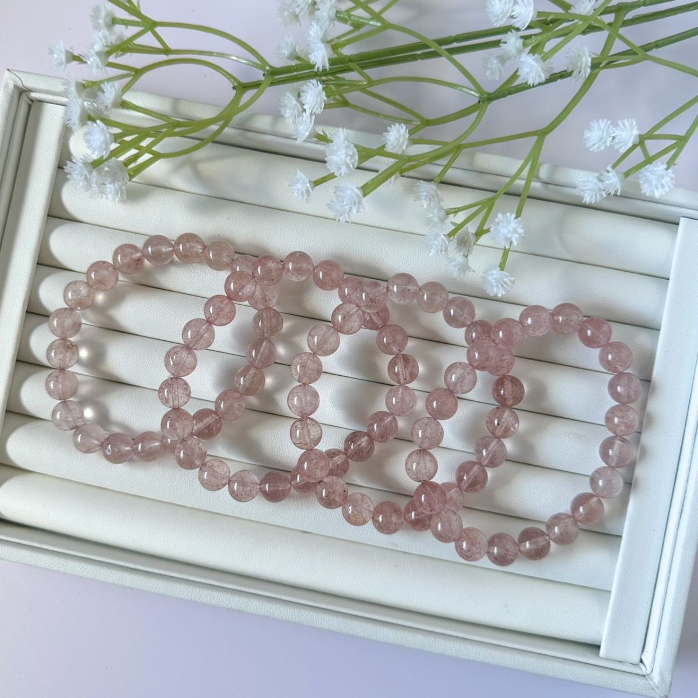

官網上的 白水體草莓晶 款式
沿用商品原名稱與照片；售價、庫存及服務依賣場最新資訊確認。

想多認識一點？
挑想看的內容展開，慢慢認識這一種礦石。
產地與礦物結構
產地背景
含內含物的石英可來自不同產區；這款的採礦地未確認。
礦物結構與名稱
「草莓晶」是市場用語，常指帶紅粉色內含物的石英；不同材料也可能以相似名稱販售，內含物種類需檢測確認。
本頁產地是礦種資料中的產出紀錄，不代表照片中商品已完成產地鑑定；原料產地、加工地與販售地是不同資訊。
能量寓意與日常陪伴
招桃花 · 好人緣
草莓晶常被賦予招桃花、增添人緣的寓意，適合寄託遇見好緣分、自在與人相處的心願。
以上為網路資料中的民間能量說法與文化寓意，僅供介紹參考，不代表科學功效或效果保證。